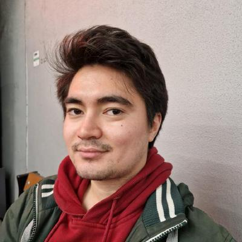

Alnur Alimanov
Software/Artificial Intelligence Developer
More than 2 years of professional experience in Python, Deep Learning, Computer Vision, and Research. Experience in Git, Cmake, Linux, bash, C++, C#, SQL, HTML, CSS, and JavaScript programming through several projects.
About me
At my last workplace at the TÜBİTAK research organization, I worked as a researcher developing novel computer vision deep learning models. I have a total of 4 projects that are published online and that were presented at the international conferences and journals in the United States of America, Germany, Indonesia and Turkey. In my last work, I have proposed a novel lightweight Denoising Diffusion Probabilistic Model for medical image generation along with an extensive dataset for medical image segmentation.
About me
I have developed several console, web, and desktop applications as my personal projects. For instance, in my latest project I developed a client-server application for instant messaging. I utilized C++ and several libraries including ASIO for networking, OpenSSL for end-to-end encryption and decryption, GLFW, ImGui, and stb for the client-side GUI application, and SQLite3 for database management.
About me
In another latest project, I have developed a C++ GUI file manager application available on Linux and Windows. The application is made with C++ standard library along with ImGui for the GUI part. Additionally, I have other projects in C++, C#, HTML, CSS, JavaScript, and Python made with Docker, Git, and CMake that are available in my CV.
About me
I am always motivated to learn something new, and I am confident that this trait will help me to contribute a lot in my career path. As part of my bachelor’s degree, I studied Mathematical Engineering at International Information Technologies University in Almaty, Kazakhstan, where I have acquired such skills as programming in C++, Python, HTML, CSS, JavaScript, SQL, and a solid mathematical background. Currently, I am pursuing a master’s degree at Bahçeşehir University in Istanbul, Turkey, studying Artificial Intelligence Engineering.
❮
❯